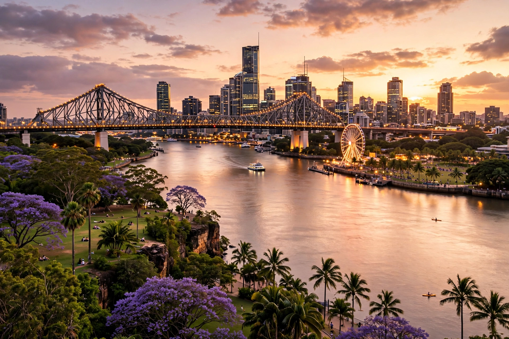

| Queensland | |
|---|---|
 | |
| Country | Australia |
| Capital | Brisbane |
| Largest city | Brisbane |
| Area | 1,852,642 km² (715,309 sq mi) — 2nd largest state |
| Population | ~5.5 million (3rd most populous) |
| Established | Separated from New South Wales, 6 June 1859 |
| Nickname | The Sunshine State |
Queensland (locally /ˈkwiːnzlænd/, QLD) is a state in northeastern Australia, the second-largest and third-most populous of the Australian states and territories. It is bordered by the Northern Territory, South Australia, and New South Wales to the west, south-west, and south respectively, and by the Coral Sea and Pacific Ocean to the east and north. Its capital and largest city is Brisbane.
Queensland's coastline stretches some 6,973 km and includes the world's largest coral reef system, the Great Barrier Reef, running parallel to the coast. The Great Dividing Range separates the fertile coastal plain from the drier interior. In the far north lies the tropical Cape York Peninsula. The state contains five World Heritage-listed preservation areas, including the Wet Tropics of Queensland and Fraser Island (K'gari), the world's largest sand island.
Aboriginal Australians and Torres Strait Islanders have inhabited the region for tens of thousands of years. The first European landing was by Dutch navigator Willem Janszoon in 1606. Queensland was proclaimed a separate self-governing colony on 6 June 1859 — celebrated annually as Queensland Day — and joined the Federation of Australia in 1901. The economy historically rested on agriculture (sugar cane, beef, bananas, pineapples) and mining; tourism is now a leading sector, drawing visitors to the Reef, the Gold Coast, the Sunshine Coast, Cairns, and the Daintree Rainforest.
Queensland has a predominantly subtropical and tropical climate with mild winters, especially in the south-east, where Brisbane, the Gold Coast, and the Sunshine Coast concentrate much of the population. The state has grown rapidly through interstate and overseas migration.
See also: Brisbane · Great Barrier Reef · Gold Coast